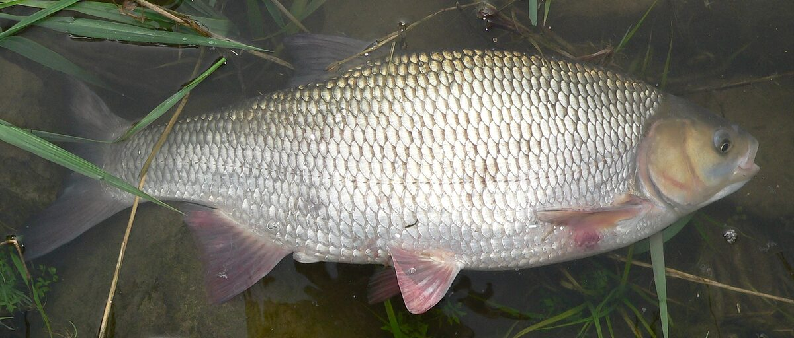

Rozpoznawanie i biologia jazia
Wygląd i cechy rozpoznawcze
Jaź ma ciało wygrzbiecone, bocznie ścieśnione, pokryte stosunkowo drobną łuską — wzdłuż linii bocznej liczy się zwykle 55–61 łusek, wyraźnie więcej niż u klenia czy płoci. Grzbiet jest ciemny, granatowo-zielonkawy, boki srebrzyste ze złotawym połyskiem, a płetwy brzuszne i odbytowa przybierają czerwonawe lub malinowe zabarwienie, szczególnie intensywne u starszych osobników. Głowa jazia jest krótka i tępo zakończona, z niewielkim, skośnym otworem gębowym. Tęczówka oka ma żółtawy odcień, co bywa pomocną cechą w szybkiej identyfikacji. Dorosłe jazie osiągają najczęściej 30–45 cm długości i masę 0,5–1,5 kg, choć w sprzyjających warunkach trafiają się okazy ponad 50 cm i 2–3 kg. Sylwetka dużego jazia jest wyraźnie wyższa i bardziej krępa niż u smukłego klenia podobnej długości.
Jak odróżnić jazia od klenia i płoci
Najpewniejszą cechą różnicującą jazia i klenia jest kształt płetwy odbytowej: u jazia jej krawędź jest wcięta (wklęsła), natomiast u klenia zaokrąglona i wypukła. Druga ważna cecha to łuski — jaź ma je drobne i liczne, kleń duże, wyraziste, często z ciemną obwódką tworzącą charakterystyczny siatkowy deseń. Głowa klenia jest masywna, szeroka, z dużym otworem gębowym, podczas gdy jaź ma głowę małą i delikatną w stosunku do ciała. Od płoci jaź różni się drobniejszą łuską, żółtawym (a nie czerwonopomarańczowym) okiem oraz wyższym, mocniej zbudowanym ciałem. Płoć ma także bardziej czerwone oko i mniejszą liczbę łusek w linii bocznej (zwykle 42–45). Warto przyjrzeć się tym cechom przed decyzją o zabraniu ryby, bo gatunki te mogą mieć różne wymiary ochronne w poszczególnych wodach.
Środowisko i występowanie w Polsce
Jaź jest gatunkiem szeroko rozpowszechnionym w całym kraju, choć jego liczebność w wielu wodach spadła w porównaniu z dekadami ubiegłego wieku. Zasiedla przede wszystkim duże i średnie rzeki nizinne o umiarkowanym nurcie — Wisłę, Odrę, Wartę, Narew, Bug, Noteć i ich większe dopływy — a także jeziora przepływowe, kanały i zbiorniki zaporowe. Preferuje odcinki o twardszym dnie, głębsze rynny przy główkach i ostrogach, rejony za przeszkodami łamiącymi nurt oraz pogranicze prądu i wody spokojnej. W jeziorach trzyma się stref przybrzeżnych z roślinnością, dopływów i wypływów. Toleruje lekko zasoloną wodę, dlatego spotyka się go również w Zalewie Wiślanym, Zalewie Szczecińskim i przyujściowych odcinkach rzek przymorskich. Jest wrażliwy na silne zanieczyszczenie, więc jego obecność bywa traktowana jako dobry sygnał o stanie wody.
Biologia i tarło
Jaź dojrzewa płciowo zwykle w wieku 3–5 lat, przy czym samce wcześniej niż samice. Tarło odbywa się wczesną wiosną, najczęściej w marcu i kwietniu, gdy woda osiąga około 6–10 stopni Celsjusza — jaź należy do najwcześniej trących się karpiowatych w naszych wodach. Ryby ciągną wtedy w górę rzek i do dopływów, gromadząc się na płytkich, przepłukiwanych prądem odcinkach o żwirowym lub porośniętym roślinnością dnie. Samica składa, zależnie od rozmiaru, od kilkudziesięciu do ponad stu tysięcy ziaren lepkiej ikry, która przykleja się do podłoża i roślin. Wylęg po kilkunastu dniach rozpoczyna życie w spokojnych zatoczkach, odżywiając się planktonem. Jaź rośnie umiarkowanie szybko i może dożyć kilkunastu, a nawet dwudziestu lat. W okresie tarła samce pokrywają się drobną wysypką perłową na głowie i grzbiecie.
Żerowanie i przepisy
Zwyczaje żerowania według pór roku
Jaź jest rybą wszystkożerną o szerokim spektrum pokarmowym, a jego dieta zmienia się wraz z porami roku. Wiosną, tuż po tarle, intensywnie żeruje przy dnie, zbierając larwy ochotek, kiełże, skąposzczety i drobne mięczaki. Latem znaczną część pokarmu stanowią owady spadające na powierzchnię wody — chrząszcze, koniki polne, jętki i mrówki — dlatego jazie często żerują wtedy w górnych warstwach wody, pod nawisami drzew. Duże osobniki nie gardzą również narybkiem, co czyni je realnym celem dla spinningistów. Jesienią ryby wracają do żerowania przydennego, gromadzą się w głębszych rynnach i intensywnie odżywiają przed zimą. Zimą aktywność jazia spada, ale nie zanika całkowicie — w łagodne dni można go spotkać żerującego na spokojniejszych, głębszych stanowiskach, gdzie reaguje na drobne, naturalne przynęty podawane delikatnym zestawem.
Wymiar ochronny, okres ochronny i limity
Według ogólnych zasad stosowanych w wodach Polskiego Związku Wędkarskiego wymiar ochronny jazia wynosi orientacyjnie 25 cm, a gatunek ten zwykle nie ma ustanowionego ogólnokrajowego okresu ochronnego. Limit dobowy bywa określany łącznie z innymi gatunkami karpiowatymi lub wagowo, w zależności od regulaminu danej wody. Trzeba jednak bardzo wyraźnie podkreślić: poszczególne okręgi PZW oraz gospodarze łowisk specjalnych ustanawiają własne, często surowsze regulacje — podwyższone wymiary, lokalne okresy ochronne, limity sztukowe czy obowiązek wypuszczania. Przed każdą wyprawą należy zweryfikować aktualne zezwolenie i regulamin okręgu, na którego wodach zamierzamy łowić, ponieważ przepisy zmieniają się z roku na rok. Nieznajomość lokalnych regulacji nie zwalnia z odpowiedzialności, a kontrole Państwowej Straży Rybackiej i Społecznej Straży Rybackiej są na popularnych wodach częste.
Metody połowu
Grunt, feeder i spławik
Klasyczne metody spokojnego spodu pozostają najskuteczniejszym sposobem łowienia jazi przez większą część sezonu. Feeder z koszykiem zanętowym 30–60 g sprawdza się na rzecznych rynnach i przy główkach — przypony 0,14–0,18 mm, haki nr 10–14, a na haku biały robak, pęczek pinki, dendrobena, kukurydza lub pszenica. Jaź jest ostrożny, więc zestaw powinien być możliwie delikatny, a brania potrafią być zarówno gwałtowne, jak i ledwie zaznaczone. Przepływanka spławikowa to z kolei piękna, aktywna metoda na uregulowanych odcinkach rzek: długa odległościówka lub bolonka, spławik 2–6 g dobrany do nurtu i przepuszczanie zestawu wzdłuż krawędzi prądu z okresowym przytrzymywaniem. Przytrzymanie unosi przynętę nad dnem i często właśnie wtedy następuje branie. Na jeziorach dobre wyniki daje delikatny spławik podawany przy trzcinach o świcie i o zmierzchu.
Spinning i mucha
Jaź to wdzięczny przeciwnik dla zwolenników lekkiego spinningu. Skuteczne są małe woblery o długości 3–5 cm, zarówno pływające, jak i tonące, prowadzone z prądem lub w poprzek nurtu, a także obrotówki nr 0–2 w stonowanych kolorach. Drobne gumy na lekkich główkach jigowych sprawdzają się przy chłodniejszej wodzie, gdy ryby stoją głębiej. Zestaw powinien być lekki: wędka o ciężarze wyrzutu do około 10 g, cienka plecionka i fluorocarbonowy przypon. Dla muszkarzy jaź jest gatunkiem pierwszorzędnym — latem chętnie bierze suche muchy, imitacje chrząszczy, mrówek i koników polnych podawane pod nawisami drzew, a poza sezonem owadów dobrze pracują nimfy i drobne streamery. Prezentacja musi być cicha i naturalna, bo spłoszony jaź potrafi na długo odmówić współpracy. Walka z większym osobnikiem na lekkim sprzęcie należy do bardzo emocjonujących.
Taktyka łowienia i nęcenie
Jaź należy do najostrożniejszych ryb karpiowatych, dlatego maskowanie i ciche zachowanie nad wodą są ważniejsze niż wymyślny sprzęt. Do stanowiska podchodzimy od dołu rzeki lub od strony zasłoniętej roślinnością, unikamy rzucania cienia na wodę i ciężkiego stąpania po brzegu. Najlepsze miejsca to krawędzie nurtu, rynny za ostrogami, wypłycenia przechodzące w głębię oraz odcinki pod nawisami drzew, skąd do wody spadają owady. Nęcenie powinno być umiarkowane i regularne: ciemna, ciężka zanęta rzeczna z dodatkiem białych robaków, kukurydzy lub konopi, podawana punktowo w kilku kulach na początku łowienia i uzupełniana małymi porcjami. Przenęcenie szybciej zaszkodzi niż pomoże. Na rzece warto przygotować dwa lub trzy stanowiska i łowić je rotacyjnie, dając rybom czas na powrót po wyholowaniu okazu. Wczesny ranek i wieczór to zwykle pory najwyższej aktywności.
Okazy, kuchnia i ciekawostki
Rekordy Polski — orientacyjnie
Dane rekordowe należy traktować ostrożnie, ponieważ rejestry prowadzone przez prasę wędkarską i PZW różnią się metodologią weryfikacji, a część zgłoszeń historycznych jest trudna do potwierdzenia. Rejestry notują jazie rekordowe o masie około 3,5–4 kg i długości przekraczającej 60 cm, przy czym pojedyncze doniesienia mówią o rybach jeszcze większych. W praktyce wędkarskiej jaź powyżej 2 kg uchodzi już za bardzo dobrą rybę, a okaz ponad 50 cm — za trofeum, którym można się cieszyć przez lata. Największe osobniki pochodzą najczęściej z dużych rzek nizinnych oraz zalewów przymorskich, gdzie ryby mają dostatek pokarmu i przestrzeni. Warto pamiętać, że stare, duże jazie są szczególnie cenne dla populacji jako tarlaki, dlatego wielu wędkarzy wypuszcza je niezależnie od przepisów.
Wartość kulinarna i zasady C&R
Mięso jazia jest smaczne, choć — jak u większości karpiowatych — silnie ościste, z licznymi drobnymi ośćmi widlastymi. Tradycyjnie przyrządza się go wędzonego, smażonego po głębokim ponacinaniu boków lub mielonego na kotlety rybne; nacinanie rozdrabnia ości i znacząco poprawia komfort jedzenia. Ryby z wód o wątpliwej czystości lepiej wypuszczać. Coraz więcej wędkarzy traktuje jazia jako gatunek typowo sportowy i stosuje zasadę złów i wypuść. Przy C&R kluczowe jest używanie haków bezzadziorowych lub z dociśniętym zadziorem, podbieraka z miękką siatką, mokrych rąk przy odhaczaniu oraz skrócenie do minimum czasu przebywania ryby poza wodą. Rybę wypuszczamy w spokojnej wodzie, podtrzymując ją pod prąd do momentu, aż sama odpłynie. Tak traktowany jaź ma duże szanse na pełną regenerację.
Ciekawostki
Złota odmiana jazia, zwana orfą, jest od stuleci hodowana jako ryba ozdobna do stawów i oczek wodnych — to jedna z najstarszych ozdobnych form ryb w Europie. Jaź potrafi hybrydyzować z innymi karpiowatymi, między innymi z płocią i kleniem, a mieszańce bywają prawdziwą zagadką identyfikacyjną nawet dla doświadczonych wędkarzy. Gatunek ten dobrze znosi wodę słonawą, dzięki czemu w zalewach przymorskich tworzy silne populacje o ponadprzeciętnych rozmiarach. W dawnej Polsce jaź był rybą cenioną gospodarczo i regularnie poławianą sieciami; wzmianki o nim znajdziemy w staropolskich inwentarzach stawowych. Ciekawostką jest też wczesny termin tarła — jazie potrafią trzeć się jeszcze przy resztkach śniegu na brzegach, gdy większość karpiowatych dopiero budzi się z zimowego spowolnienia.
FAQ — najczęstsze pytania
Czym najszybciej odróżnić jazia od klenia?
Najpewniej kształtem płetwy odbytowej: u jazia jest wcięta, u klenia zaokrąglona i wypukła. Dodatkowo jaź ma drobne łuski (55–61 w linii bocznej) i małą głowę, a kleń duże łuski z ciemną obwódką i masywną, szeroką głowę z dużym pyskiem. Przy wątpliwościach warto porównać obie cechy naraz, bo pojedyncza może mylić, zwłaszcza u młodych ryb.
Kiedy najlepiej łowić jazia?
Najbardziej regularne żerowanie przypada na okres od późnej wiosny do połowy jesieni, ze szczytami aktywności o świcie i o zmierzchu. Latem jazie chętnie zbierają owady z powierzchni, co sprzyja musze i lekkiemu spinningowi, a wiosną i jesienią lepsze bywają metody gruntowe. Zimą aktywność spada, ale w łagodne dni delikatny zestaw przydenny wciąż może przynieść rybę.
Jaki jest wymiar ochronny jazia?
Orientacyjnie, według ogólnych zasad PZW, wymiar ochronny jazia wynosi 25 cm. Poszczególne okręgi i łowiska specjalne mogą jednak stosować wymiary podwyższone, limity sztukowe lub obowiązek wypuszczania, dlatego każdorazowo trzeba sprawdzić aktualne zezwolenie i regulamin okręgu, na którego wodzie łowimy.
Czy jaź bierze na sztuczne przynęty?
Tak, zwłaszcza większe osobniki, które regularnie polują na narybek i owady. Skuteczne są małe woblery 3–5 cm, obrotówki nr 0–2, drobne gumy oraz — w sezonie owadów — suche muchy i imitacje chrząszczy. Kluczem jest lekki, delikatny zestaw i cicha prezentacja, ponieważ jaź należy do najostrożniejszych ryb naszych wód.
Źródła i weryfikacja
Powyższe treści mają charakter przeglądowy i edukacyjny. Podane wymiary ochronne, okresy ochronne i limity połowowe odpowiadają ogólnym zasadom Polskiego Związku Wędkarskiego na dzień publikacji i mają charakter orientacyjny — okręgi PZW oraz gospodarze łowisk ustanawiają własne regulaminy, dlatego przed każdym połowem należy zweryfikować aktualne zezwolenie, regulamin właściwego okręgu oraz informacje publikowane na pzw.org.pl. Artykuł nie stanowi gwarancji wyników połowu.